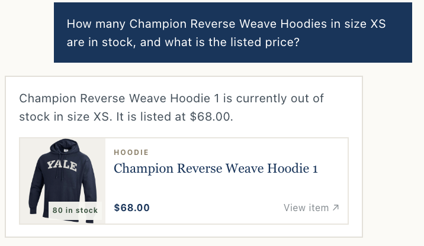
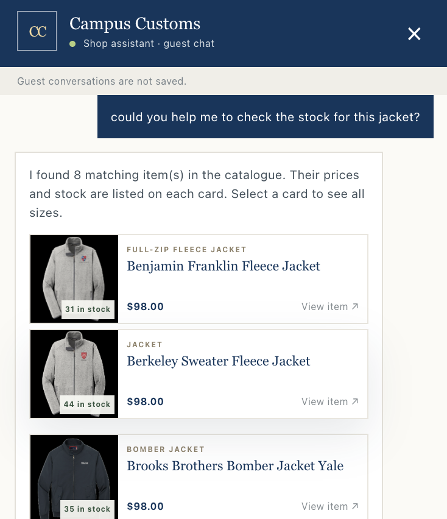
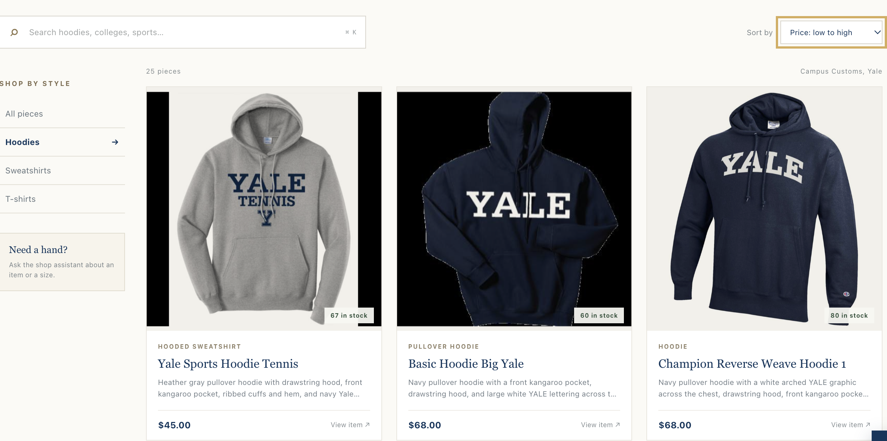

These checks were completed in the running local app with the supplied course database.
Behavior checked
1. Inventory answer from the database
The local chat check used the Champion Reverse Weave Hoodie in size XS. The assistant reported that XS is out of stock and gave the listed price of $68. The database records quantity 0 for XS.

The answer reports size XS as out of stock at $68. The product card's “80 in stock” badge shows total stock across sizes.
Behavior checked
2. Dynamic search-result cards
In the guest chat, the shopper asked to check the stock for a jacket. The assistant returned eight matching jacket cards, each showing its price and stock count.

The guest-chat answer displays multiple matching jackets with price and stock information on each card.
Behavior checked
3. Product filters and price sorting
Searching for “Champion” returned one matching item. The Hoodies filter reduced the catalogue to 25 items. Setting “Price: low to high” moved the $45 Yale Sports Hoodie Tennis to the top of the filtered results. These controls make a large catalogue easier to browse.

The Hoodies filter is active, results are sorted by price from low to high, and the $45 Yale Sports Hoodie Tennis is first.
All three Problem 11 checks include screenshot evidence in app_check_images/.